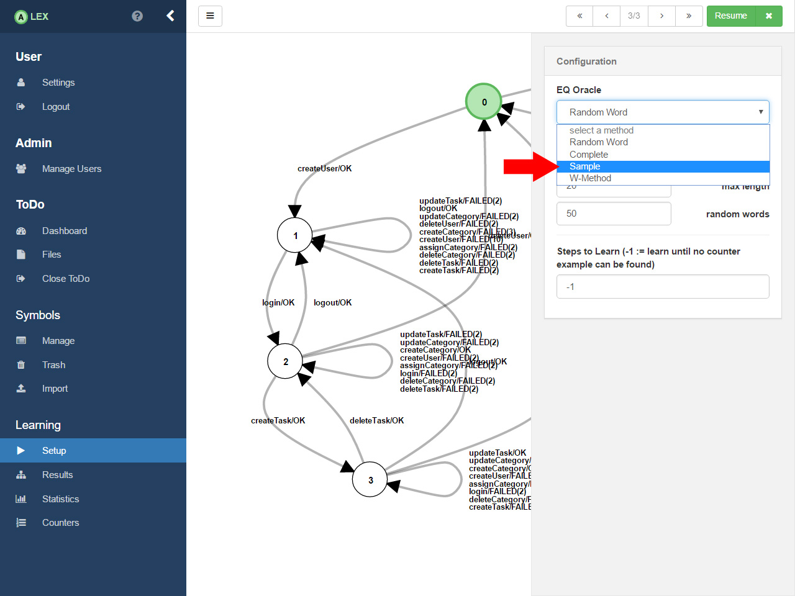
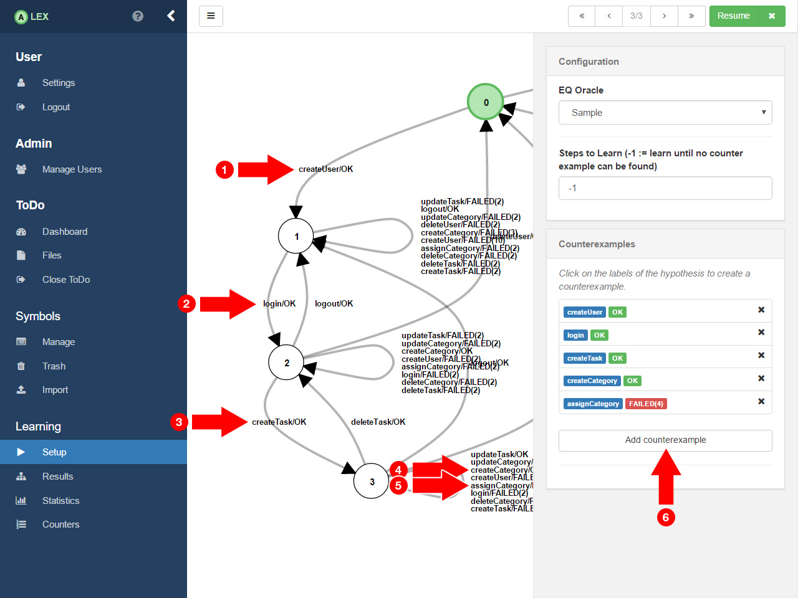
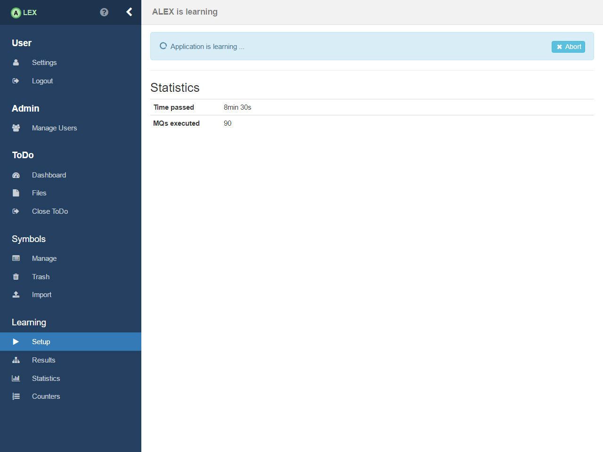

Refine ToDo
In the previous section, we learned ToDo and generated a hypothesis of the application, but can we be sure that it really reflects the behaviour of ToDo? Because of the nature of black-box testing, we can not. So, we now look manually at the automaton and search for paths, where we assume they differ from the actual behaviour.

On a closer notice, one can see that the path createUser, login, createTask, createCategory, assignCategory seems to have a different output than ToDo, because after having created a task and a category, we are able to assign the category to the task. So we have to check it.

Therefore, click on the gear icon in the top right corner. A sidebar appears.

Next, select the Sample eq oracle, which means we want to search for counterexamples manually.

Then, click the labels of the hypothesis in the order we discussed above. By clicking on the button Add counterexample in the widget, it is checked whether the sequence differs from the application.

In case the sequence is a counterexample, a success message will pop-up and it is added to the configuration. To refine the hypothesis, click on the Resume button which will redirect you to the loading page again.

The learner refines the hypothesis with the given counterexample.

After some time, it will output a refined hypothesis which has now one more state than before. The sequence now matches the actual behaviour. This process can now be continued as long as you think it is necessary.